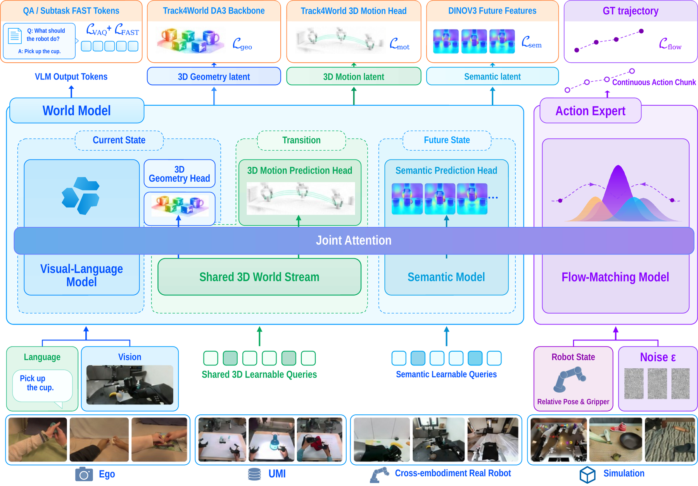
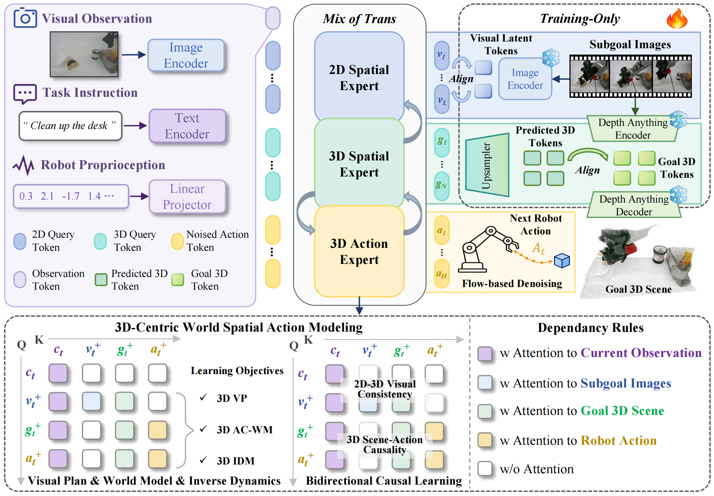

About me
I am a master's student in the Spatial Intelligence Group (SIG) at Tongji University, advised by Prof. Jingkuan Song. My research focuses on embodied AI and robot learning, particularly pretraining embodied foundation models such as vision-language-action (VLA) and world-action models (WAMs).
I am committed to developing robot foundation models that learn transferable knowledge about physical interaction and adapt across tasks, environments, and embodiments. I am particularly interested in learning from diverse data sources and in using predictive world representations to support more data-efficient robot learning.
Research interests
- Embodied AI and robot foundation models
- Learning from embodiment-free data
- Implicit world model representations
- Recursive self-improvement (RSI) in robotics
Selected publications
My name is shown in bold in the author lists.


Awards & Honors
- CVPR 2026 GigaBrain Challenge · RoboTwin Track3rd place worldwide
- CVPR 2026 GigaBrain Challenge · RoboChallenge Track4th place worldwide
- National Undergraduate Electronics Design ContestNational First Prize
- National Intelligent Car CompetitionNational Second Prize
- Zhongke Huiyuan Cup AI + Intelligent Manufacturing ChallengeRunner-up
Patents
English translations of published Chinese patent application titles. My name is shown in bold.